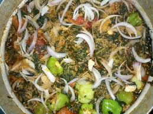
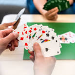

CUISINE
Présentation
Blog
La cuisine est l'ensemble des techniques de préparation des aliments en vue de leur consommation par les êtres humains que l'on a appelé précédemment « la cuisinerie ». La cuisine est diverse à travers le monde. Elle est l'un des éléments représentant la notion de terroir quand elle est le fruit des ressources naturelles et productions agricoles locales, des us et coutumes, de la culture et des croyances, du perfectionnement des techniques, des échanges entre peuples et cultures.
La cuisine a ainsi dépassé son simple impératif biologique d'alimentation pour devenir un corpus de techniques plus ou moins pointues, un fait culturel, un élément de patrimoine et d'identité national ou familial, un élément de systèmes de valeurs, mais aussi un sujet d'étude pour les sciences sociales et la sociologie, voire un enjeu de politique et de santé publique.
L'essentiel sur la cuisine

Au xviie siècle s'élabore la grande cuisine française qui devient un « art » et se diffuse dans ce qu'on appelle à l’époque le monde civilisé. Avec la colonisation européenne quasi-mondiale de la fin du xixe siècle, le standard de la cuisine européenne a semblé s'imposer. Dans les années 1970 se développe la nouvelle cuisine, qui laisse la place une dizaine d'années plus tard à, « d'un côté, la mise en concurrence de hautes cuisines nationales de plus en plus nombreuses et, de l'autre, l'affrontement de la cuisine technico-conceptuelle avec la cuisine dite “supernaturelle”1. Ce qui donne lieu, à chaque fois, à de beaux affrontements entre néophiles et néophobes »2.
En Afrique la cuisine est une chose ttès importante que l'on doit savoir faire homme comme femme. Faire la cuisine chez nous c'est préparer un met delicueux avec les condiments de chez nous. Comme:Tomate;Piment;Oignon;Ail;Gimgenbre etc. Chaque met à ces condiments et conditions de préparer. Gràce à la cuisine toute une famille mange et se rejouir. Elle donne une force externe et interne à l'homme par la préparation de la nourriture.
La CUISINE c'est toute une vie.
Rubrique
Jeux
Football
Films

Plusd'info